Rolling-window VaR and CVaR estimation with Traffic Light backtesting across two major equity markets. January 2010 – December 2023.
Project Overview
How do the S&P 500 and CSI 300 indices differ in their downside tail-risk profiles? Do standard VaR and CVaR models — calibrated on historical, parametric, and EWMA-based volatility estimates — perform consistently across both markets when subjected to rolling-window backtesting?
Study Design & Data Coverage
Observation counts differ between markets due to trading calendar differences and regional data availability.
Methodology
For each observation in the test period, VaR and CVaR are estimated using a trailing 4-year window (1,008 trading days). Three modelling approaches are applied at two confidence levels (95% and 99%).
Uses the empirical quantile of the rolling window to estimate VaR. CVaR is the mean of returns that fall below the VaR threshold. No distributional assumption.
Assumes returns within the window are normally distributed. VaR is derived from the inverse normal CDF; CVaR uses the closed-form normal tail expectation formula.
Exponentially weighted moving average variance, following RiskMetrics convention. EWMA adapts quickly to volatility clustering by down-weighting older observations.
Exception counts are compared to expected counts over the test period (~10 years). Ratings: Green (well-calibrated), Yellow (moderate deviation), Red (>15% below expected).
Exploratory Analysis
Both return series exhibit leptokurtosis (heavier tails than the normal distribution), particularly evident in the S&P 500. The CSI 300 shows higher daily volatility (1.39% vs 1.10%) and a modestly lower average daily return. The normality assumption underlying the parametric VaR model is most strained in the tails.
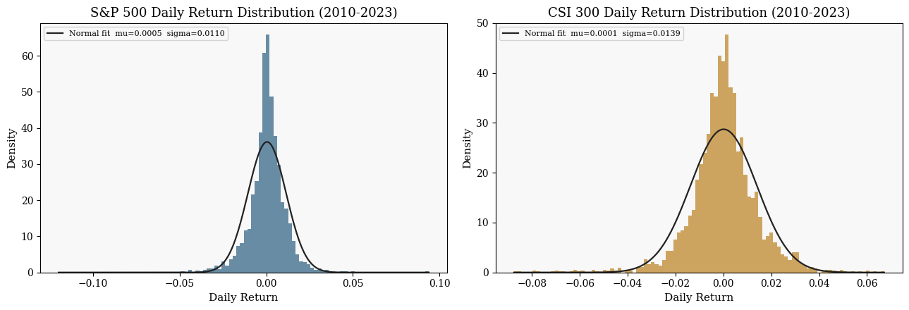
Fig. 1 — Empirical daily return histograms with fitted Normal distributions. Both series show heavier-than-normal tails.
Risk Metric Time Series
Test window spans approximately 2014–2023. VaR and CVaR estimates bound the lower tail of the daily return distribution. Select a view below.
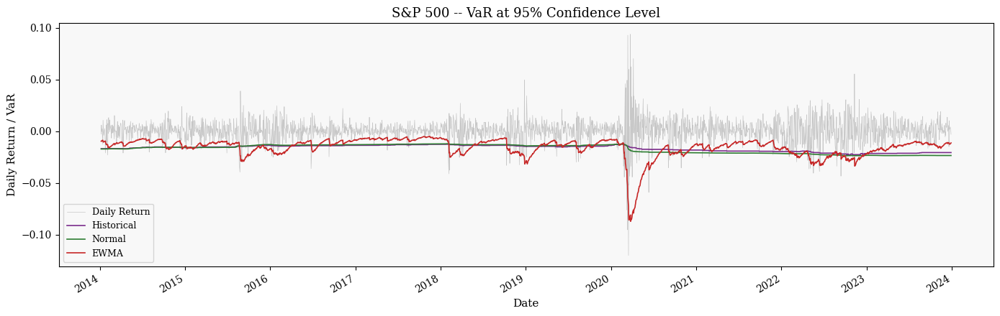
Fig. 2a — S&P 500 rolling VaR at 95% confidence level. Grey: daily returns. Coloured: Historical (purple), Normal (green), EWMA (red) VaR estimates.
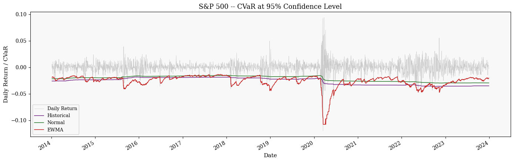
Fig. 2b — S&P 500 rolling CVaR at 95% confidence level.
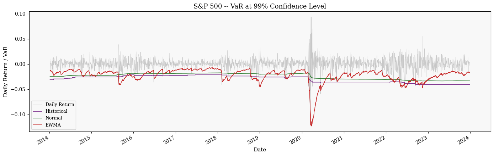
Fig. 3a — S&P 500 rolling VaR at 99% confidence level. EWMA estimates show pronounced volatility-clustering effects.
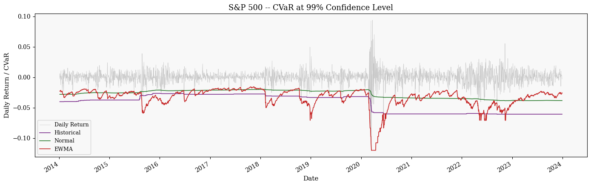
Fig. 3b — S&P 500 rolling CVaR at 99% confidence level.
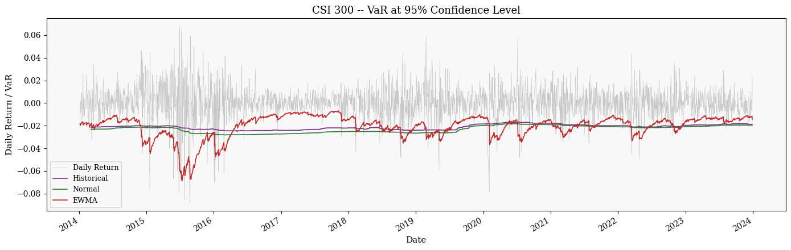
Fig. 4a — CSI 300 rolling VaR at 95% confidence level. Higher absolute estimates reflect CSI 300's greater daily volatility.
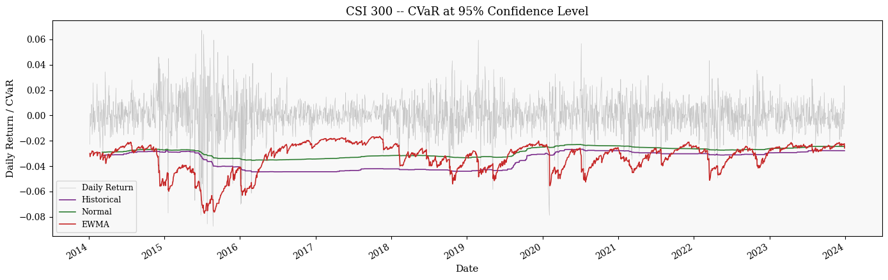
Fig. 4b — CSI 300 rolling CVaR at 95% confidence level.
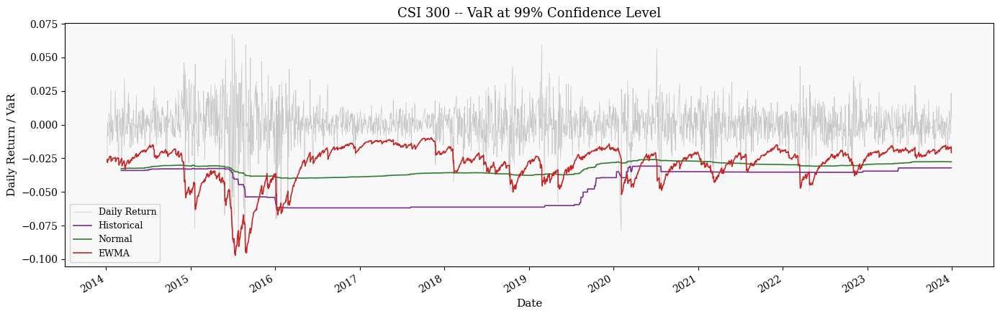
Fig. 5a — CSI 300 rolling VaR at 99% confidence level.
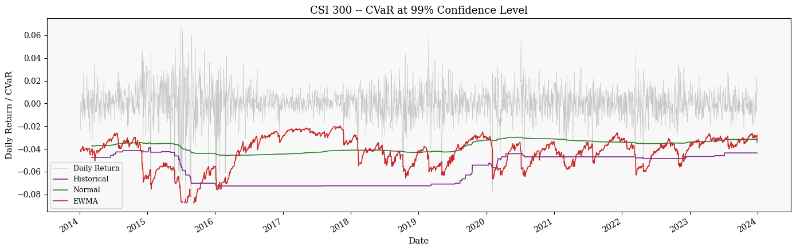
Fig. 5b — CSI 300 rolling CVaR at 99% confidence level.
Backtesting
Exception counts over the full test period versus the expected count under each confidence level. Green indicates the model is well-calibrated or slightly conservative; Yellow/Red signals deviation >5% or >15% below the expected exception rate (over-conservative model).
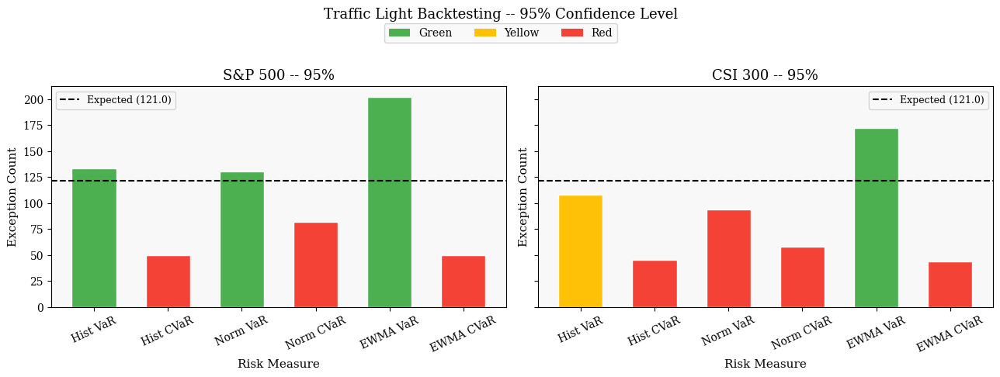
Fig. 6 — Traffic Light backtesting at 95% confidence level. Dashed line: expected 121 exceptions.
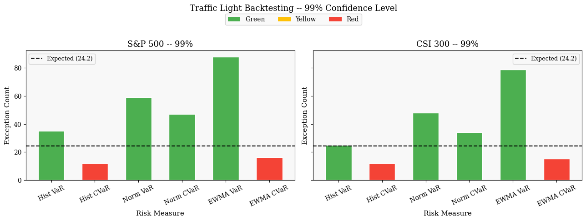
Fig. 7 — Traffic Light backtesting at 99% confidence level. Dashed line: expected 24.2 exceptions.
| Metric | Expected | S&P 500 | Rating | CSI 300 | Rating |
|---|---|---|---|---|---|
| Hist VaR | 121 | 133 | Green | 108 | Yellow |
| Hist CVaR | 121 | 50 | Red | 45 | Red |
| Norm VaR | 121 | 130 | Green | 94 | Red |
| Norm CVaR | 121 | 82 | Red | 58 | Red |
| EWMA VaR | 121 | 202 | Green | 172 | Green |
| EWMA CVaR | 121 | 50 | Red | 44 | Red |
| Metric | Expected | S&P 500 | Rating | CSI 300 | Rating |
|---|---|---|---|---|---|
| Hist VaR | 24.2 | 35 | Green | 25 | Green |
| Hist CVaR | 24.2 | 12 | Red | 12 | Red |
| Norm VaR | 24.2 | 59 | Green | 48 | Green |
| Norm CVaR | 24.2 | 47 | Green | 34 | Green |
| EWMA VaR | 24.2 | 88 | Green | 79 | Green |
| EWMA CVaR | 24.2 | 16 | Red | 15 | Red |
Results
Caveats
Project Resources
Full analysis in Python with pandas, NumPy, SciPy, and matplotlib. Runnable from the repository root.
Complete implementation in R using ggplot2 and the tidyverse. Exported HTML report also available.
Parallel implementation using MATLAB's Financial Toolbox, including the varbacktest function.
Rendered HTML report from the R Markdown analysis with all outputs included.
Full written report with methodology, results, and discussion in PDF format.
Daily OHLC price data for the S&P 500 and CSI 300, sourced from Investing.com and Yahoo Finance.